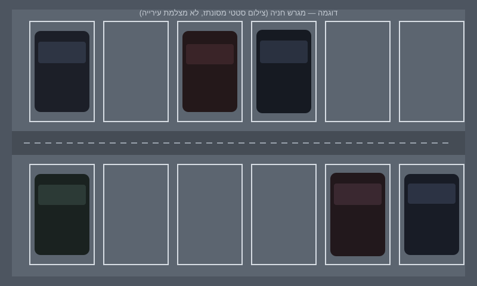
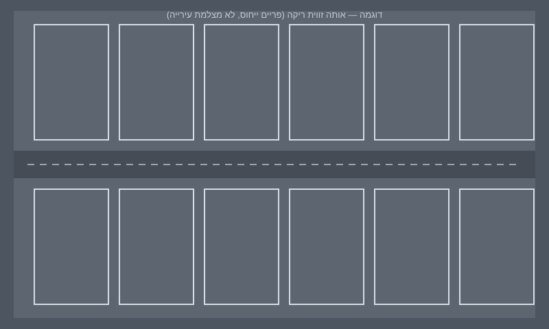
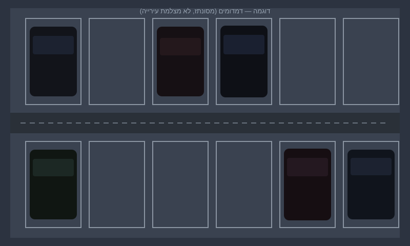
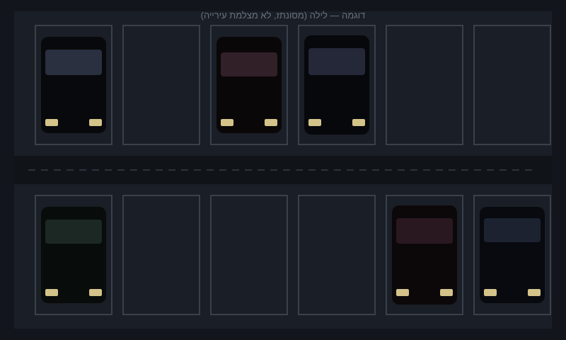
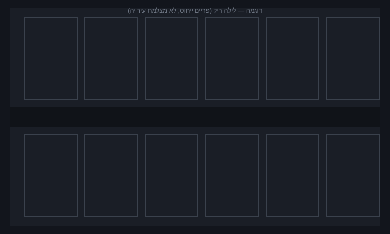
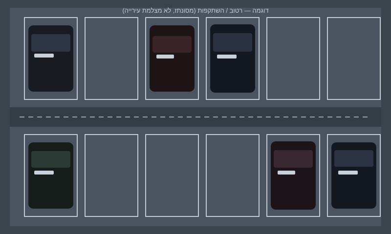
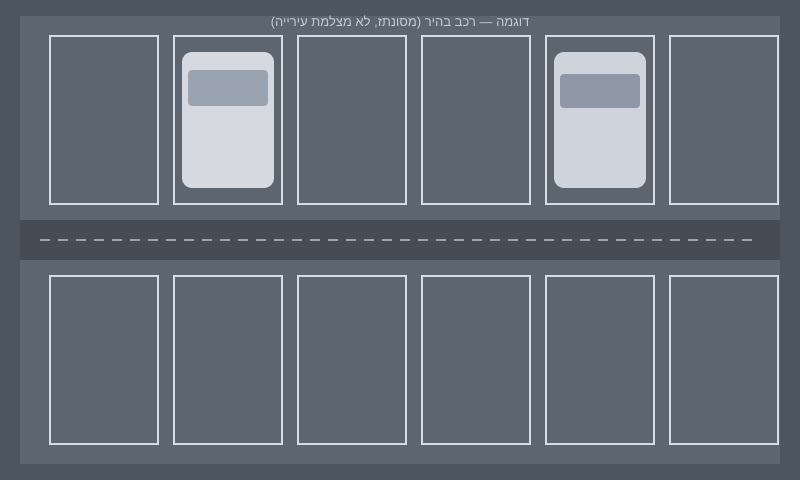

דיוק דמו — נמדד על סט מסונתז
כל אחד יכול להריץ את ההערכה בלי מצלמה. המספרים למטה מחושבים עכשיו בדפדפן מול תוויות שציירנו במחולל.
v2 מול v1 על אותו סט
—
v2 הסכמה (היוריסטיקה)
—
v1 בהירות (היוריסטיקה)
—
שיפור נקודות אחוז
—
השוואות מקום
לפי תאורה
| תאורה | v2 הסכמה | מקומות |
|---|
לפי סצנה — איפה זה נשבר
| סצנה | v2 | v1 | הערה |
|---|
צל על מקום ריק ורכבים בצבע אספלט הם כשלי אמת של השיטה. הם מופיעים בטבלה במקום להיות מוסתרים.
סצנות ויזואליות שכלולות בריפו
SVG מסונתז, אותה פריסת 12 מקומות כמו sample-spots.json.







JSON גולמי מההרצה הזו
ParkWiz · הערכה מקומית · בלי שרת ובלי CDN